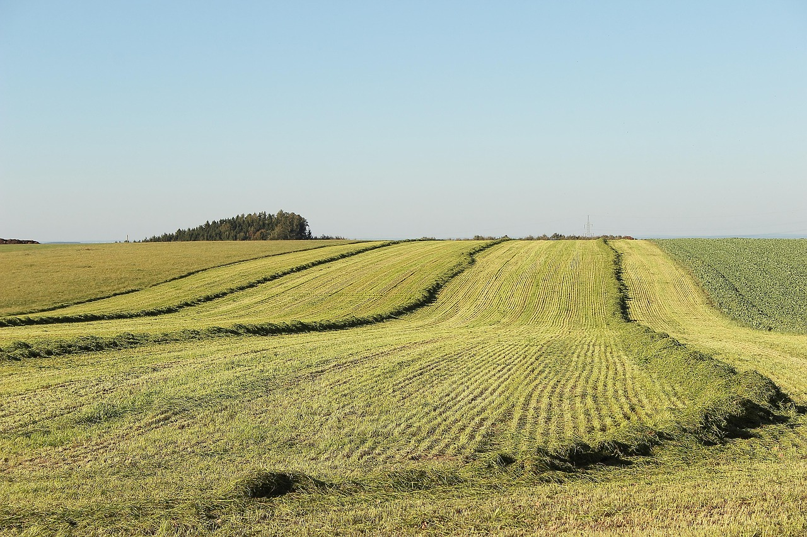

a relação:
a relação do campo com a cidade é uma relação de dependência mútua,
onde o campo fornece alimentos e matérias-primas para a cidade,
matérias necessárias para cidade funciona,
enquanto a cidade oferece tecnologia, mercado consumidor e
serviços para o campo, coisas que ajudam o campo a se modernizar.
